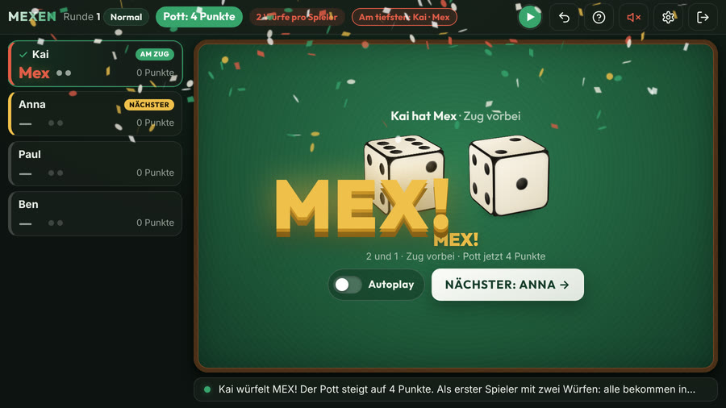
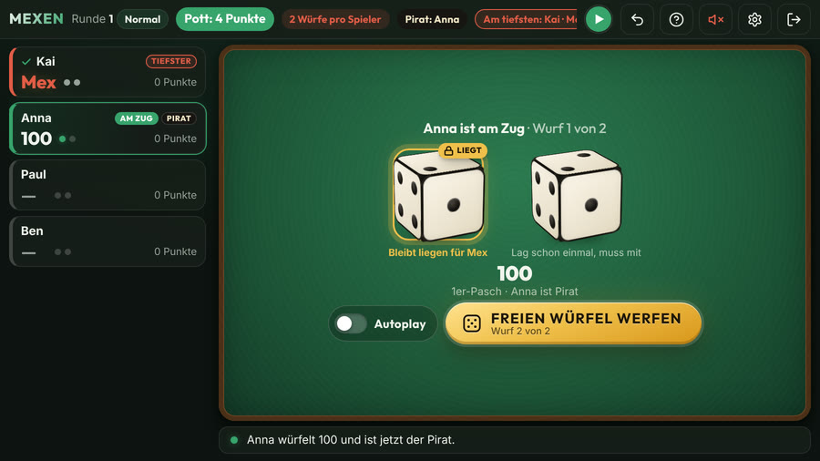
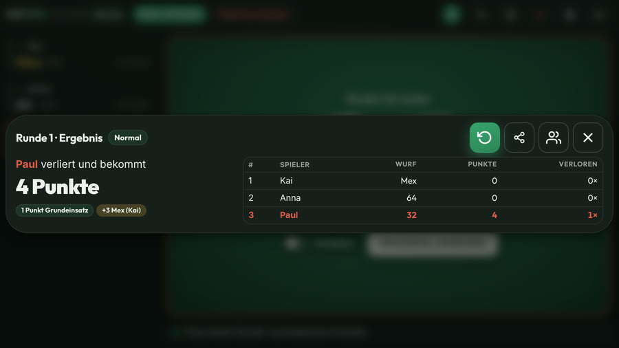

Mexen: die Regeln
Mexen (auch Mex) ist ein schnelles niederländisches Würfelspiel mit zwei Würfeln. Es ist mit Mäxchen verwandt und zählt fast genauso, aber es wird offen gewürfelt und niemand blufft: Wer am Ende der Runde am niedrigsten liegt, verliert und nimmt den Pott. Gespielt wird um Schlucke oder einfach um Punkte. Jeder Tisch hat eigene Hausregeln; hier stehen die Regeln, wie die Mexen-App sie spielt.
- Spieler
- 2 oder mehr
- Material
- 2 Würfel
- Eine Runde
- ein paar Minuten
- Um Schlucke
- nur ab 18

So liest du einen Wurf
Der höhere Würfel ist der Zehner, der niedrigere der Einer: eine 6 und eine 4 sind 64, eine 5 und eine 3 sind 53. Von hoch nach niedrig:
- Mex (2 und 1) ist der höchste Wurf.
- Pasche zählen als Hunderter: 6er-Pasch ist 600, 5er-Pasch 500, bis 1er-Pasch = 100.
- Normale Würfe: 65, 64, 63 und so weiter, bis 41.
- 32 ist der niedrigste Wurf.
- 31 ist kein Ergebnis: Du verteilst einen Schluck und würfelst noch einmal.
Dein Zug
- Du hast drei Würfe, und der letzte zählt. Früher aufhören geht nicht; nur ein Mex oder eine 32 beenden den Zug vorzeitig.
- Nach einem Wurf darfst du einen Würfel liegen lassen, aber höchstens einen Wurf lang; danach muss er wieder mit. Eine 1 liegen zu lassen gibt eine Chance auf Mex. Mit einer 2 geht das auch, aber dann riskierst du eine 32.
- Innerhalb einer Runde bleiben die Würfel auf dem Tisch: Auch der nächste Spieler darf eine gerade gewürfelte 1 liegen lassen. Eine neue Runde beginnt mit leerem Tisch.
- Würfelt der erste Spieler der Runde Mex mit einem oder zwei Würfen, bekommen alle nach ihm nur so viele Würfe.
Mex, 32 und 31
- Mex (2 und 1): Dein Zug ist sofort vorbei, und 3 Schlucke kommen in den Pott.
- 32: der niedrigste Wurf. Dein Zug ist sofort vorbei, und das ist dein Endergebnis.
- 31: Du verteilst einen Schluck an wen du willst. Der Wurf zählt nicht, und du würfelst noch einmal, so oft es vorkommt.
Der Pirat
Würfelst du einen 1er-Pasch, wirst du Pirat. Jeder Pasch von 2 bis 6, den danach irgendjemand würfelt, ist ein Schluck für den Piraten. Würfelt der Pirat selbst noch einmal einen 1er-Pasch, wird er Pirat ×2: zwei Schlucke pro Pasch (und so weiter). Würfelt jemand anderes einen 1er-Pasch, übernimmt er. Der Pirat bleibt über die Runden hinweg.

Rundenende: der Pott
- Wenn alle dran waren, verliert das niedrigste Ergebnis und nimmt den Pott: 1 Schluck, plus 3 für jedes Mex der Runde.
- Liegen zwei oder mehr Spieler gleichauf ganz unten, würfelt jeder von ihnen einen Würfel: Der höchste Wurf verliert. Wieder gleich? Dann würfeln nur sie noch einmal.
- Der Verlierer beginnt die nächste Runde.
Um Punkte statt um Schlucke
Lieber ohne Alkohol? Spielt um Punkte: Überall, wo „Schluck“ steht, lest ihr „Punkt“. Der Verlierer einer Runde bekommt den Pott als Punkte dazu; wer am Ende die meisten Punkte hat, ist Letzter. In der App wählst du das beim ersten Start und später in den Einstellungen.

Variante: extrem
- Alle würfeln immer genau dreimal, auch nach einem Mex; nur der dritte Wurf zählt.
- Liegen lassen geht nicht: Du würfelst immer mit beiden Würfeln.
- Der Pott beginnt bei 1. Mex und 65 verdoppeln den Pott, und jeder Pasch zählt seine Augen dazu (3er-Pasch = +3, 1er-Pasch = +1). Alles in der Reihenfolge, in der gewürfelt wird.
- 31 zählt nicht: einfach noch einmal würfeln, ohne Schluck zu verteilen. Der Pirat funktioniert wie im normalen Spiel.
- Der Niedrigste nimmt den ganzen Pott; bei Gleichstand würfeln diese Spieler je einen Würfel, wie oben.
Die App zählt für euch mit
Die kostenlose Mexen-App ist der Punktezähler: 3D-Würfel, sie kennt alle Regeln oben, führt den Pott und den Piraten und sagt, wer verliert. In sechs Sprachen, ohne Konto, auch offline.
Verantwortungsvoll spielen
Spielt ihr um Schlucke? Nur ab 18, in Maßen trinken und danach nicht fahren. Oder spielt einfach um Punkte.